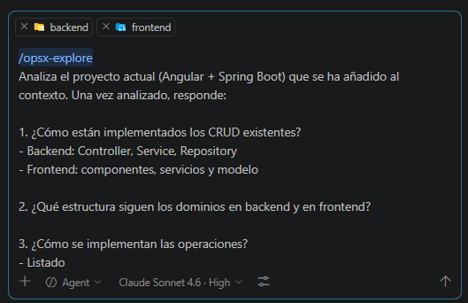
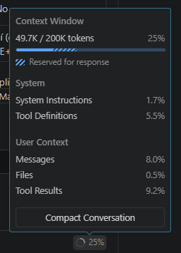

Gestión de préstamos (modelo con licencia)
Warning
Esta sección se encuentra en desarrollo 🚧.
NO se recomienda realizarla a menos que te lo hayan indicado expresamente.
Punto de partida
Si has llegado hasta aquí, entiendo que ya has completado la funcionalidad de gestión de clientes utilizando el modelo con licencia.
A partir de ahora vamos a dar por hecho que partimos de ese estado del sistema, donde:
- Existe un CRUD funcional de clientes
- La funcionalidad está implementada, validada y archivada
- Los patrones de backend y frontend introducidos ya forman parte del sistema
Una vez llegados a este punto, asumimos que el proyecto ya está descargado y configurado, y que hemos trabajado previamente sobre la funcionalidad de gestión de clientes.
Por tanto, continuaremos utilizando los mismos proyectos y directorios, sin realizar ninguna instalación ni configuración adicional.
En este tutorial seguiremos trabajando sobre:
server-springbootcomobackendclient-angular17comofrontend
Requisitos funcionales
- Gestión de préstamos entre clientes y juegos.
- Listado paginado con filtros por juego, cliente y fecha.
- Alta/edición en modal con campos obligatorios (salvo identificador).
- Validaciones de fechas y restricciones de solapamiento.
- Máximo 14 días por préstamo.
- Un juego no puede estar prestado a dos clientes en el mismo día.
- Un cliente no puede tener más de dos préstamos activos en el mismo día.
Estrategia del modo con licencia
Continuaremos trabajando con un modelo de pago, utilizando Claude Sonnet 4.6 y el mismo workspace que en la funcionalidad de gestión de clientes.
Antes de comenzar, ten en cuenta lo siguiente:
- Para cada nueva funcionalidad, es recomendable iniciar una nueva conversación de chat dentro del mismo proyecto
Esto ayuda a mantener el contexto limpio y a que el modelo se centre exclusivamente en la funcionalidad que vamos a abordar.
Recuerda que en cualquier momento puedes ver el consumo mensual de tu cuenta pulsando el icono de la rana 🐸 en la esquina inferior derecha. El contador se reinicia cada mes.
Vamos a abordar el ejercicio como un único bloque de trabajo, analizando y construyendo la funcionalidad de forma simultánea en backend y frontend.
De esta manera aprovechamos el mayor contexto del modelo de pago, permitiendo:
- Analizar
backendyfrontendal mismo tiempo - Diseñar la funcionalidad de forma coherente en ambas capas desde el inicio
Esto nos permite mantener una visión global del sistema durante todo el proceso y reducir la necesidad de dividir artificialmente el trabajo en fases independientes por capa.
Además, recuerda que el comportamiento del modelo no es determinista. Si a ti te genera algo diferente a lo que ves aquí, probablemente seguirá siendo válido. No te frustres y ajusta los prompts si es necesario.
Flujo de trabajo OpenSpec
Seguiremos el ciclo completo de OpenSpec:
1. Explore
2. Propose
3. Apply
4. Archive
Backend y frontend
Aunque no es obligatorio, es altamente recomendable volver a ejecutar la fase de Explore. El sistema ha podido cambiar desde tu último cambio, alguien ha podido hacer modificaciones, etc. En tu caso no sería necesario ya que estás trabajando tu solo y no has cambiado nada, pero es buena práctica hacerlo siempre.
Explore
El objetivo de esta fase es analizar el sistema existente, sin modificar nada.
A diferencia de la gestión de clientes, este caso de uso introduce una mayor complejidad, principalmente por:
- Relaciones entre entidades (cliente, juego, préstamo)
- Uso de paginación en los listados
- Aplicación de filtros combinados
- Necesidad de validaciones de negocio más complejas
En esta fase se analizará qué partes del sistema actual ya resuelven este tipo de problemas y pueden reutilizarse, y qué aspectos no están implementados y deberán abordarse en fases posteriores.
Aspectos a revisar:
Paginación
- Cómo se implementa en backend (uso de Page)
- Cómo se consume en frontend
- Cómo se integra en tablas
Filtros
- Cómo se implementa en el catálogo de juegos
- Cómo se implementan filtros por rangos de fechas (si existen)
- DTOs de filtro utilizados
- Construcción de queries en backend
- Cómo se construyen queries con condiciones combinadas y operadores distintos de igualdad
- Cómo se envían los filtros desde Angular
Relaciones entre entidades
- Cómo se modelan relaciones en JPA
- Ejemplos existentes en el proyecto
- Cómo se representan en DTOs
- Cómo se cargan y exponen los datos relacionados
Validaciones en backend
- Dónde se implementan (Service)
- Cómo se gestionan errores
- Cómo se propagan al frontend
- Cómo se implementan validaciones sobre rangos de fechas
- Cómo se validan restricciones que dependen de registros existentes (solapamientos, límites por cliente, etc.)
Combos (selects) en frontend - Cómo se cargan datos (clientes, juegos) - Uso de servicios Angular - Flujo de carga en componentes
⚠️ En esta fase:
- NO se escribe código
- NO se diseña la solución
- NO se inventan estructuras nuevas
Solo se analiza el sistema actual.
📜 Prompt
Lo que haremos será escribir en el chat de Visual Studio Code el comando y las instrucciones que queramos darle. Recuerda haber elegido Claude Sonnet 4.6 y estar trabajando en modo Agent.
En este caso, hemos añadido las carpetas del proyecto frontend y backend al contexto, por lo que el análisis se realizará sobre el sistema completo.
Para ello, desde el propio Chat de Copilot, pulsando el botón “+”, puedes seleccionar y añadir tanto archivos individuales como directorios completos del proyecto. También es posible añadirlos arrastrándolos directamente al chat.

/opsx:explore
Analiza el proyecto actual (Angular 17 + Spring Boot) centrándote en las funcionalidades necesarias para implementar la gestión de préstamos y responde:
1. ¿Cómo se implementa la paginación?
- Backend: uso de Page y construcción de respuestas paginadas
- Frontend: consumo de datos paginados
- Integración en tablas
2. ¿Cómo se implementan los filtros en los listados?
- Especialmente en el catálogo de juegos
- DTOs de filtro utilizados
- Construcción de queries en backend
- Uso de condiciones combinadas (no solo igualdad)
- Ejemplos de filtros por rango de fechas (si existen)
- Ejemplos de consultas donde una fecha debe estar contenida dentro de un rango (si existen)
- Cómo se envían los filtros desde Angular
3. ¿Cómo se gestionan relaciones entre entidades?
- Modelado en JPA
- Ejemplos en el proyecto
- Cómo se representan en DTOs
- Cómo se exponen los datos relacionados
4. ¿Cómo se implementan validaciones en backend?
- Dónde se ubican (Service)
- Cómo se gestionan errores
- Cómo se propagan al frontend
- Si existen validaciones que dependan de múltiples registros o condiciones
- Si existen validaciones relacionadas con fechas o rangos
- Cómo se validan restricciones basadas en datos existentes
5. ¿Cómo se cargan datos en combos (selects) en frontend?
- Servicios Angular utilizados
- Cómo se obtienen los datos
- Flujo de carga en componentes
NO propongas soluciones.
NO diseñes la funcionalidad de préstamos.
NO repitas el análisis básico del sistema.
NO incluyas código completo. Resume la lógica cuando sea necesario.
Céntrate únicamente en los aspectos necesarios para implementar la funcionalidad de gestión de préstamos.
Este comando realizará un análisis exhaustivo de tu sistema que servirá como base para definir la nueva funcionalidad en la siguiente fase.
Sobre los permisos
Es posible que durante el análisis te pida permiso para hacer ciertas tareas. Le puedes ir dando permiso una a una o darle permiso en todo el workspace, eso lo dejamos a tu elección.
En cualquier momento puedes ver el consumo de la ventana de contexto para saber si todo el conocimiento del sistema está en memoria o no. En el icono de la gráfica circular que está situada en la parte inferior derecha del chat.

Propose
Una vez analizado el sistema en la fase Explore, el siguiente paso es definir de forma clara y estructurada la nueva funcionalidad a implementar.
En esta fase establecemos qué vamos a construir, apoyándonos en el conocimiento ya consolidado del sistema y en el resultado del Explore.
Esta fase actúa como puente entre el análisis y la implementación, permitiendo diseñar la solución antes de escribir código y reduciendo el riesgo de errores durante el desarrollo.
Durante esta fase debes especificar:
Descripción funcional
- Qué hace la funcionalidad
- Qué problema resuelve
Reglas de negocio
- Validaciones sobre fechas:
- La fecha de fin no podrá ser anterior a la fecha de inicio
- Restricciones de duración del préstamo:
- El período de préstamo máximo solo podrá ser de 14 días
- Validaciones de solapamiento de préstamos:
- El mismo juego no puede estar prestado a más de un cliente para ninguno de los días incluidos en el rango del préstamo
- Límites de préstamos simultáneos por cliente:
- Un mismo cliente no puede tener más de 2 préstamos activos para ninguno de los días incluidos en el rango del préstamo
Diseño backend
- Endpoints necesarios
- Estructura del dominio (Entity, DTO, Service, Repository)
- Tipo de operaciones (listado, creación, edición, borrado)
- Estrategia para filtros por fecha dentro de rangos
Diseño frontend
- Componentes necesarios
- Flujo de usuario (listado, abrir modal, guardar, borrar)
- Servicios Angular
- Gestión de combos (clientes y juegos)
- Integración de filtros y paginación
- Integración de Datepicker para filtro por fecha
- Estructura de pantalla:
- Listado, seguirá la estructura general de las pantallas ya existentes, reutilizando:
- Patrón de filtros de catálogo. Para este caso, se permitirá filtrar por:
- Título del juego (combo)
- Cliente (combo)
- Fecha (Datepicker): la fecha seleccionada debe estar contenida entre la fecha de inicio y la fecha de fin del préstamo
- Patrón de paginación del listado de autores
- El orden de las columnas del listado será:
- Identificador
- Nombre del juego
- Nombre del cliente
- Fecha de préstamo
- Fecha de devolución
- Las fechas se mostrarán siempre en formato DD/MM/YYYY
- Patrón de filtros de catálogo. Para este caso, se permitirá filtrar por:
- Alta/edición:
- El identificador aparecerá vacío en creación y en modo solo lectura
- Debajo se mostrará el campo de nombre de cliente (combo seleccionable)
- Debajo se mostrará el campo de nombre de juego (combo seleccionable)
- Debajo se mostrará la sección de fechas de préstamo: la fecha de inicio y la fecha de fin estarán en la misma fila
- Todos los campos, salvo el identificador, serán obligatorios
- Listado, seguirá la estructura general de las pantallas ya existentes, reutilizando:
Decisiones técnicas
- Qué patrones existentes se reutilizan
- Qué partes deben extenderse
- Cómo se gestionarán los filtros de fecha y condiciones combinadas
- Cómo se implementarán validaciones basadas en múltiples registros (solapamientos y límites)
Plan de implementación
- Tareas ordenadas
- Separación backend / frontend
- Prioridad de desarrollo (listado → filtros → validaciones)
Aquí dejamos claro:
- Qué funcionalidad se va a añadir
- Qué reglas de negocio existen
- Qué piezas del sistema se ven afectadas
- Qué tareas habrá que ejecutar
⚠️ En esta fase:
- NO se implementa código
- NO se redefine el sistema
📜 Prompt
Recuerda que seguimos trabajando en modo Agent, con las carpetas del proyecto frontend y backend añadidas al contexto.
Para nuestro ejemplo, lo que haremos será escribir en el chat de Visual Studio Code el siguiente prompt:
/opsx:propose loan
Define la funcionalidad de gestión de préstamos basándote en el sistema actual (Angular 17 + Spring Boot), en los patrones identificados en la fase Explore y en los requisitos funcionales indicados.
Requisitos funcionales:
- Se necesita una funcionalidad de gestión de préstamos
- Un préstamo relaciona un cliente y un juego
- El listado será paginado
- Existirá una zona de filtros en la parte superior del listado
- Se podrá filtrar por:
- Juego (combo seleccionable)
- Cliente (combo seleccionable)
- Fecha (Datepicker)
- La fecha seleccionada deberá estar contenida entre la fecha de inicio y la fecha de fin del préstamo para que el registro aparezca en el listado
- El listado deberá mostrar:
- Identificador
- Nombre del juego
- Nombre del cliente
- Fecha de préstamo
- Fecha de devolución
- Las fechas se mostrarán en formato DD/MM/YYYY
- Existirá una pantalla modal de alta / edición
- En alta / edición:
- El identificador aparecerá vacío en creación y en modo solo lectura
- Se seleccionará cliente mediante combo
- Se seleccionará juego mediante combo
- Se introducirán fecha de inicio y fecha de fin en la misma fila
- Todos los campos, salvo el identificador, serán obligatorios
Reglas de negocio:
- La fecha de fin no podrá ser anterior a la fecha de inicio
- El período máximo del préstamo será de 14 días
- El mismo juego no podrá estar prestado a más de un cliente para ninguno de los días incluidos en el rango del préstamo
- Un mismo cliente no podrá tener más de 2 préstamos activos para ninguno de los días incluidos en el rango del préstamo
- Las mismas validaciones aplican tanto en creación como en edición
- El backend deberá validar siempre, aunque el frontend también realice validaciones
Define:
1. Descripción de la funcionalidad
2. Reglas de negocio
3. Diseño backend:
- Endpoints necesarios
- Estructura del dominio (Entity, DTO, Service, Repository)
- Tipo de operaciones (listado, creación, edición, borrado)
- Estrategia para filtros por fecha dentro de rangos
4. Diseño frontend:
- Componentes necesarios
- Flujo de interacción (listado, abrir modal, guardar, borrar)
- Servicios Angular
- Gestión de combos (clientes y juegos)
- Integración de filtros y paginación
- Integración de Datepicker para filtro por fecha
- Estructura funcional del listado y del formulario de alta/edición
5. Decisiones técnicas:
- Qué patrones del sistema actual se reutilizan
- Qué partes deben extenderse
- Cómo se gestionarán los filtros de fecha y condiciones combinadas
- Cómo se implementarán validaciones basadas en múltiples registros (solapamientos y límites)
NO implementes código.
NO analices de nuevo el proyecto.
Basa la propuesta en los patrones detectados en la fase Explore.
Igual que en la gestión de clientes, este comando genera dentro del directorio changes la propuesta correspondiente, que incluye los siguientes ficheros: proposal.md, design.md, spec.md, tasks.md.
Estos artefactos están adaptados a la funcionalidad de gestión de préstamos, incorporando las reglas de negocio, filtros y validaciones específicas de este caso de uso.
Constituyen la base para la siguiente fase: Apply, donde se ejecutará la implementación siguiendo las tareas definidas.
Responsabilidades como developer IA
En este punto la IA te ha hecho una propuesta que puede ser correcta o no, recordemos que se trata de un modelo matemático-probabilístico. Si hay algo de lo propuesto que no te encaja o es erróneo deberías comentarlo mediante el chat o corregirlo de forma manual en el fichero que corresponda. Por ejemplo si quieres añadir una tarea porqué se te ha olvidado incluirla en el prompt original, deberías decirle al modelo que te incluya la nueva tarea.
Una vez estemos de acuerdo con la propuesta que nos ha hecho la IA, podemos pasar al siguiente punto.
Apply
Una vez validada la propuesta, ejecutamos la implementación:
El objetivo de esta fase es transformar los artefactos generados
(proposal.md, design.md, spec.md, tasks.md) en código funcional, asegurando que:
- Se respetan los requisitos funcionales definidos en
spec.md - Se siguen las decisiones técnicas establecidas en
design.md - Se ejecutan las tareas en el orden definido en
tasks.md
📜 Prompt
Esto es tan fácil como escribir en el chat de Visual Studio Code el siguiente prompt:
/opsx:apply
El agente empezará a realizar un montón de tareas y pedirnos permisos. Es posible que algunas de esas tareas fallen y él mismo lo reintente de otra forma. El resultado debería ser el código generado e implementado tanto en la carpeta backend como en la carpeta frontend y un resumen de todas las tareas realizadas y checkeadas por la IA.
Verificación
Un paso que no pertenece a OpenSpec pero que es altamente recomendable es probar los cambios realizados.
Arranca el backend y el frontend y verifica:
- La aplicación levanta correctamente
- Las nuevas funcionalidades añadidas están accesibles
- Los flujos principales definidos en
spec.mdfuncionan como se espera
Ojo no te fies
Ojo no te fies de todo lo que construya la IA. Tu estás al mando, tu debes decidir si el sistema está correctamente implementado o no. Es tu responsabilidad.
Si NO estás a gusto con la implementación o se ha dejado algo por hacer, es el momento de escribirlo por el chat indicándole exactamente que es lo que falta. Cuanto más preciso y conciso seas, mejor implementará la IA.
Archive
Y llegamos a la última etapa que nos define OpenSpec, donde se archiva el cambio y se da por finalizada la funcionalidad.
El objetivo de esta fase es marcar la funcionalidad como completada, consolidar todos los artefactos generados durante el proceso y dejar el sistema en un estado estable, coherente y preparado para nuevas evoluciones.
📜 Prompt
De nuevo nos vamos al chat de Visual Studio Code el siguiente prompt:
/opsx:archive
Durante el proceso de Archive, el sistema solicitará confirmación para sincronizar los requisitos antes de archivar el cambio.
Recuerda que al sincronizar, los requisitos definidos en spec.md pasan de ser un cambio temporal a formar parte permanente del sistema.
Si no se sincroniza, el código queda implementado, pero los requisitos no se registran en los specs principales afectando a la trazabilidad y futuras evoluciones del sistema.